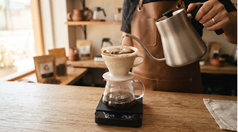
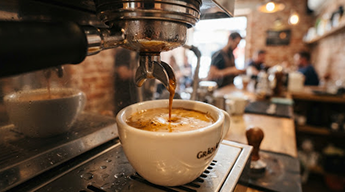
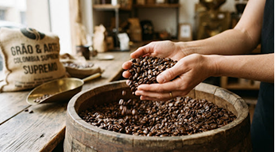

O Aroma que Inspira seu Dia
Descubra a arte do café em cada xícara. Selecionamos os melhores grãos de produtores locais para trazer uma experiência artesanal autêntica, torrada com paixão e servida com calor.
Nossas Especialidades

Café Coado
Método V60 ou Chemex, ressaltando as notas florais e frutadas dos nossos grãos de torra clara.

Espresso Clássico
Corpo denso, crema espessa e notas intensas de chocolate amargo e caramelo. A base perfeita.

Grãos selecionados
Leve a experiência Grão & Arte para casa. Pacotes de 250g de microlotes exclusivos, torrados semanalmente.
A Arte por trás do Grão
Na Grão & Arte, acreditamos que fazer café é um processo lento e cuidadoso. Nascemos da paixão por extrair o melhor de cada colheita, respeitando o tempo da natureza e o trabalho dos produtores.
Nosso ambiente foi pensado para ser um refúgio da agitação da cidade. Um lugar onde as conversas fluem tão naturalmente quanto nossos métodos de extração. Sente-se, respire o aroma e aproveite o momento.
Conheça nossa história completa